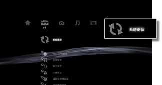

設定 > 系統更新
系統更新
PlayStation®3的系統軟件會隨著不斷的更新而逐漸追加各種機能或強化安全性。請隨時更新為最新版本。
可選擇以下兩種方法執行更新：
- 透過網際網路更新
- 透過儲存媒體更新
重要
- 請勿於更新中關閉PS3™主機的電源或強制取出光碟、儲存媒體。更新若遭到中斷，可能會導致故障。
- PS3™主機前面的電源按鈕與無線控制器的PS按鈕可能會於更新途中失效。
- 若不執行系統軟件之更新，可能無法正常播放部分內容。
透過網際網路更新
透過網際網路，將更新資料直接下載至PS3™並執行更新。會自動下載最新的系統軟件。
1. |
選擇  |
|---|---|
2. |
選擇［透過網際網路更新］。 |
 （設定）的
（設定）的 （系統更新）。
（系統更新）。透過儲存媒體更新
使用保存至光碟或Memory Stick™等儲存媒體的下載資料以執行更新。使用個人電腦，可經由官方網站，下載更新資料。詳細請閱覽各區域的官方網站。
提示
- 部份遊戲光碟或市售的Blu-ray Disc（藍光光碟）影像軟件（BD-ROM）等可能已預先收錄了更新資料。若播放已收錄更新資料的光碟，即會顯示更新的說明畫面。請遵循畫面指示，進行更新。
- 部分PS3™機種需於使用儲存媒體時，搭配非隨附的USB讀卡機等。